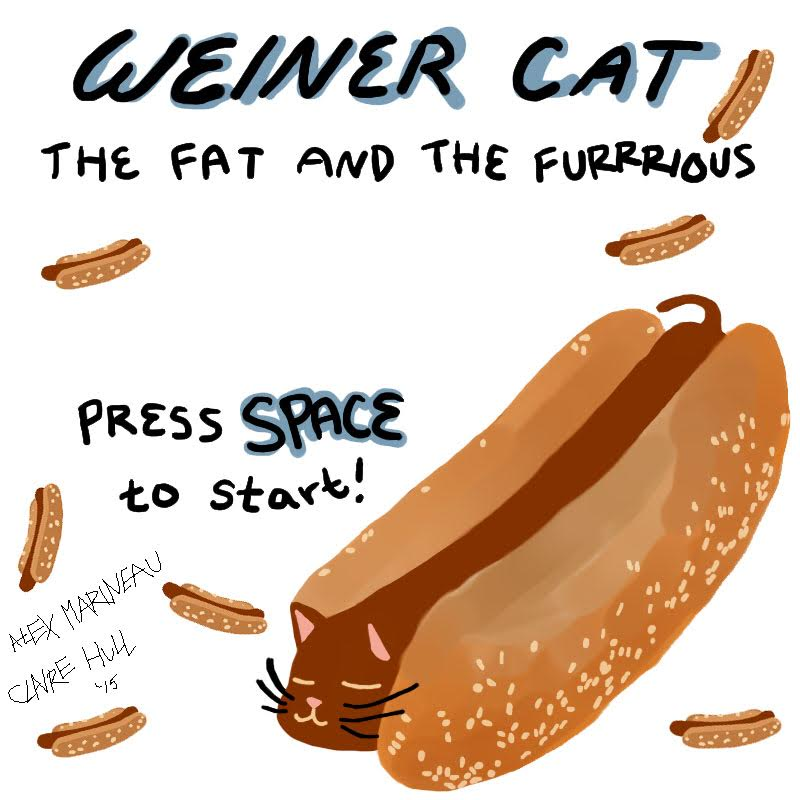

Toggle navigation
Brand
Home
Code Snippit
Code Snippit 1
Code Snippit 2
Code Snippit 3
Code Snippit 4
Projects
Project B
Project C
Group Project
Wiener Cat

Your browser does not support the audio element.